Applied Survival Analysis
Chapter 11 - Joint Analysis of Longitudinal and Survival Data
Department of Biostatistics & Medical Informatics
University of Wisconsin-Madison
Outline
- Linear mixed effects models for longitudinal data
- A two-stage joint modeling approach
- Extensions and dynamic prediction
- Analysis of an anti-retroviral drug trial
- An example with multiple biomarkers*
\[\newcommand{\d}{{\rm d}}\] \[\newcommand{\T}{{\rm T}}\] \[\newcommand{\dd}{{\rm d}}\] \[\newcommand{\cc}{{\rm c}}\] \[\newcommand{\pr}{{\rm pr}}\] \[\newcommand{\var}{{\rm var}}\] \[\newcommand{\se}{{\rm se}}\] \[\newcommand{\indep}{\perp \!\!\! \perp}\] \[\newcommand{\Pn}{n^{-1}\sum_{i=1}^n}\]
Overview
- Background
- Biomarkers, quality of life measured longitudinally while being followed for a clinical event
- Joint modeling
- Association between biomarker and (clinical) endpoint
- CD4 cell count \(\to\) death from AIDS
- Serum creatinine/eGFR \(\to\) kidney failure
- Dependent dropout (death) in longitudinal analysis
- Dynamic prediction of survival/biomarker
- Association between biomarker and (clinical) endpoint
Linear Mixed Effects Models
Longitudinal Data
- Outcome Data
- \(Y_{i1},\ldots, Y_{in_i}\) longitudinal responses measured on subject \(i\) at the \(t_{ij}\)
- \(t_{i1},\ldots, t_{in_i}\): measurement occasions for subject \(i\)
- \(Z_{ij}\): covariates on subject \(i\) at \(t_{ij}\)
- Patient characteristics \(+\) time trend (functions of \(t_{ij}\))
- Longitudinal regression
- Mean model: \(E(Y_{ij}\mid Z_{ij}) = \gamma_0 + \gamma^\T Z_{ij}\)
- Example: \(E(Y_{ij}\mid A_i)=\gamma_0+\gamma_1A_i+\gamma_2t_{ij}+\gamma_3A_it_{ij}\)
- \(Z_{ij}=(A_i, t_{ij}, A_it_{ij})^\T\); \(A_i = 1, 0\): treatment indicator
Handling Correlations
- Challenge: correlation of the \(Y_{ij}\) over \(t_{ij}\)
- Standard least squares invalid or suboptimal
- Linear mixed effects (LME) models \[\begin{equation}\label{eq:longit:lme}
Y_{ij}=\gamma_0+\gamma^\T Z_{ij}+b_i^\T\tilde Z_{ij}+\epsilon_{ij}
\end{equation}\]
- \(\tilde Z_{ij}\) contains 1 and a subset of \(Z_{ij}\)
- \(b_i\sim \mathcal N(0,\Sigma_b)\): subject-specific random effects (intercept, slope)
- Induces correlation within subject
- \(\epsilon_{ij}\sim_{\rm i.i.d.} \mathcal N(0,\sigma^2)\): random measurement error
- True values: \(E(Y_{ij}\mid Z_{ij}, b_i)=\gamma_0+\gamma^\T Z_{ij}+b_i^\T\tilde Z_{ij}\)
LME Example
- Random intercept \(+\) random slope
- \(Y_{ij}=\gamma_0+\gamma_1t_{ij}+b_{i0}+b_{i1}t_{ij}+\epsilon_{ij}\)
- \(Z_{ij}=t_{ij}\), \(\tilde Z_{ij}=(1, t_{ij})^\T\), \(b_i=(b_{i0},b_{i1})^\T\)
- \(Y_{ij}=\gamma_0+\gamma_1t_{ij}+b_{i0}+b_{i1}t_{ij}+\epsilon_{ij}\)
Estimation and Inference
- EM algorithm with \(b_i\) as missing data
- \(E\)-step: conditional expectation of \(b_i\) and \(b_i^2\) given observed data
- Explicit under multivariate normal
- \(M\)-step: (weighted) least squares
- \(E\)-step: conditional expectation of \(b_i\) and \(b_i^2\) given observed data
- Variance components
- \(\hat\Sigma_b\): between-subject
- \(\hat\sigma_2\): within-subject
Two-Stage Joint Modeling
Rationale
- Traditional Cox model
- Survival vs observed biomarker as (internal) time-varying covariates
- Limitations
- Biomarker measured at discrete times, with missing data in-between
- Biomarker measured with error (sometimes with erratic noise)
- Two-stage modeling
- Longitudinal sub-model: true biomarker process over continuous time
- Survival sub-model: Cox model with true biomarker process as time-varying covariate
Longitudinal Sub-Model
- Conceptual setup
- \(Y_i(t)\): latent biomarker process at time \(t\)
- \(Y_i(t_{ij}) = Y_{ij}\)
- \(Z_i(t), \tilde Z_i(t)\): latent covariate processes at time \(t\)
- \(Z_i(t_{ij}) = Z_{ij}\); \(\tilde Z_i(t_{ij}) = \tilde Z_{ij}\)
- \(Y_i(t)\): latent biomarker process at time \(t\)
- Reformulation of LME \[\begin{equation}\label{eq:longit:longit_sub}
Y_i(t)=m_i(t)+\epsilon_i(t),
\end{equation}\]
- \(m_i(t)=\gamma_0+\gamma^\T Z_i(t)+b_i^\T\tilde Z_i(t)\): True biomarker process
- \(\epsilon_i(t)\): Error process
Survival Sub-Model
- Model specification \[\begin{equation}\label{eq:longit:survival_sub}
\pr\{t\leq T_i<t+\dd t\mid Z_i^*, \overline m_i(t)\}=\exp\{\beta^\T Z_i^*+\nu m_i(t)\}\lambda_0(t)\dd t
\end{equation}\]
- \(T_i\): survival endpoint
- \(\overline m_i(t)=\{m_i(u):0\leq u\leq t\}\): biomarker history
- \(Z_i^*\): baseline covariates to be adjusted for in survival model
- \(\nu\): log-hazard ratio with one unit increase in current biomarker
- Estimation
- \(E\)-step: conditional expectation of the \(b_i\) (numerical integration)
- \(M\)-step: (weighted) least squares \(+\) partial-likelihood score
Extensions and Dynamic Prediction
Interaction and Trend Effect
- Biomarker effect by baseline group
- Biomarker \(\times\) baseline interaction \[ \pr(t\leq T_i<t+\dd t\mid Z_i^*, \overline m_i(t))=\exp\big\{\beta^\T Z_i^*+\nu m_i(t)+ \tilde\nu^\T Z_i^*m_i(t)\big\}\lambda_0(t)\dd t \]
- Effect of biomarker trend (change rate)
- Longitudinal sub-model \[\begin{equation}\label{eq:longit:longit_sub_slope} m_i(t)=\gamma_0+\gamma^\T Z_i+\eta t+b_{i0}+b_{i1}t, \end{equation}\]
- Survival sub-model \[\begin{equation}\label{eq:longit:survival_sub_rand} \pr(t\leq T_i<t+\dd t\mid Z_i, b_i)=\exp\{\beta^\T Z_i+\nu_0b_{i0}+\nu_1b_{i1}\}\lambda_0(t)\dd t. \end{equation}\]
- \(\nu_1\):log-hazard ratio by unit increase in biomarker change rate
GLMM
- Generalized linear mixed-effects models (GLMM)
Binary, categorical, count biomarkers \[\begin{equation}\label{eq:longit:glmm} g\left[E\{Y_i(t)\mid Z_i,b_i\}\right]=\gamma_0+\gamma^\T Z_i(t)+b_i^\T\tilde Z_i(t) \end{equation}\]
- Example : logistic regression with \(g(x)=\log\{x/(1-x)\}\)
Subject-level trajectory \[m_i(t)=g^{-1}\left\{\gamma_0+\gamma^\T Z_i(t)+b_i^\T\tilde Z_i(t)\right\}\]
Survival sub-model: plug in \(m_i(t)\) or \(g\{m_i(t)\}\)
Multivariate Models
- Multple biomarkers
- Longitudinal sub-models \[ m_{ik}(t)=\gamma_{0k}+\gamma_k^\T Z_i(t)+b_{ik}^\T\tilde Z_i(t), \quad k =1,\ldots, K \]
- Survival sub-model \[ \pr\{t\leq T_i<t+\dd t\mid Z_i^*, \overline m_{i1}(t), \ldots, \overline m_{iK}(t)\}=\exp\left\{\beta^\T Z_i^*+\sum_k\nu_k m_{ik}(t)\right\}\lambda_0(t)\dd t \]
- Multple events
- Shared-fraity sub-models \[\begin{equation}\label{eq:longit:survival_sub_mult} \pr\{t\leq T_{ik}<t+\dd t\mid \xi_i, Z_i^*, \overline m_i(t)\}=\xi_i\exp\{\beta_k^\T Z_i^*+\nu_k m_i(t)\}\lambda_{0k}(t)\dd t \end{equation}\]
Dynamic Prediction
- Setup
- Question: Prediction of survival/biomarker given current data
- Observed biomarker history: \(\overline Y_i(u)=\{Y_i(t_{ij}):0\leq t_{ij}\leq u\}\)
- Prediction of future outcomes
- Survival \[ \mathcal S_i\{t\mid u, \overline Y_i(u)\}=\pr\{T_i > t \mid T_i>u, \overline Y_i(u)\} \]
- Biomarker \[ \mathcal M_i(t\mid u)=E[Y_i(t)\mid T_i>u, \overline Y_i(u)] \]
- Both computable under fitted model
Software: JM package (I)
- Longitudinal sub-model
id: subject identifier;y: response;covariates: \(Z\);cov_rand: \(\tilde Z\)
Software: JM package (II)
- Joining two sub-models
"occasion": time variable in longitudinal model (same unit astime)"piecewise-PH-aGH": piecewise linear baseline with 6 internal knots
- Output: a list of class
jointModelobj$coefficients: main componentbetas: \(\hat\gamma\);gammas: \(\hat\beta\);alpha: \(\hat\nu\);sigma: \(\hat\sigma\);D: \(\hat\Sigma_b\)
Summary(obj)to print summary results
Software: JMbayes2 package (I)
- Multiple non-Gaussian biomarkers (Bayesian approach)
mixed_model(formula, family = binomial()): logistic GLMM
# Fit longitudinal sub-models (linear time)
# Biomarker 1 (Continuous)
longit_sub1 <- lme(y1 ~ covariates + obstime,
random = ~ obstime | id, data = df)
# Biomarker 2 (Binary)
longit_sub2 <- mixed_model(y2 ~ covariates + obstime,
random = ~ obstime | id, data = df,
family = binomial())
# Fit the Cox sub-model without the biomarker
surv_sub <- coxph(Surv(time, status) ~ covariates,
data = df_surv, x = TRUE)Software: JMbayes2 package (II)
- Join models (Bayesian approach)
- Specify
functional_formsfor each biomarkervalue(): \(m_{ik}(t)\) (\(g\{m_{ik}(t)\}\) for GLMM)slope(): \(\d m_{ik}(t)/\d t\);\(\quad\)area(): \(\int_0^t m_{ik}(u)\d u\)
- Specify
# Define functional forms of biomarkers to include in joint model
fForms <- list("y1" = ~ value(y1) + slope(y1),
"y2" = ~ value(y2) + slope(y2))
# Combine the longitudinal and survival sub-models
obj <- jm(surv_sub, list(longit_sub1, longit_sub2),
time_var = "obstime",
functional_forms = fForms)
# Dynamic prediction
pred <- predict(obj, newdata = df_new)Anti-Retroviral Drug Trial
Study Background
- Study information
- Population: 467 HIV-positive patients randomized to receive didanosine (ddI) and zalcitabine (ddC) followed over a median length of 13.2 month
- Primary endpoint : All-cause mortality
- Longitudinal biomarker: number of CD4 cells per cubic millimeter of blood (square-root transformed), measured at baseline, 2, 6, 12, 18 months
- Aims: evaluate associations between
- Treatment (ddI vs ddC) \(\to\) CD4 cell count
- CD4 cell count \(\to\) mortality
Study Data
- Data format
- Repeated measures of CD4 cell count + death

Joint Modeling of Mortality and CD4
- LME + Cox model
- Random intercept & time slope
- Fixed effects: time, treatment \(\times\) time
- adjusting for patient sex, history of HIV infection
Summary Results (I)
- Longitudinal sub-model
# Combine the two models
obj_joint <- jointModel(longit_sub, surv_sub, timeVar = "obsmo",
method = "piecewise-PH-aGH")
summary(obj_joint)
#> Variance Components:
#> StdDev Corr
#> (Intercept) 3.9797 (Intr)
#> obsmo 0.1928 -0.0890
#> Residual 2.0428
#> Longitudinal Process
#> Value Std.Err z-value p-value
#> (Intercept) 5.8614 0.6562 8.9322 <0.0001
#> obsmo -0.1922 0.0240 -8.0175 <0.0001
#> sexmale -0.3823 0.6642 -0.5757 0.5649
#> histnoAIDS 4.8617 0.4091 11.8835 <0.0001
#> obsmo:drugddI 0.0219 0.0333 0.6558 0.5120Summary Results (II)
- Survival sub-model
- Results
- ddI leads to slightly slower rate of decline (by 0.0219 per month) in \(\sqrt{\rm CD4}\)
- One unit decline in \(\sqrt{\rm CD4}\) increases the risk of death by \(\exp(0.2569) = 1.30\)-fold (p-value \(< 0.0001\))
Mean CD4 Trajectory
- Model-based predictions

Multiple Biomarkers Example*
Heart Valve Replacement Study
- Study information
- Population: 256 patients receiving a valve replacement surgery, followed for up to 10 years from 1991–2002
- Primary endpoint : All-cause mortality
- Longitudinal biomarkers
- Left ventricular ejection fraction (LVEF): < 50%
- Valve gradient (mmHg): pressure difference across heart valve during blood flow (valve narrowing)
- LV mass index (g/m\(^2\)): mass of LV relative to subject’s body surface area (hypertrophy)
- Baseline factors
- Patient age, sex, LV size (mm), LV function grade (1: good, 2: moderate, and 3: poor), history of cardiac surgery, presence of a coronary artery bypass graft (CABG), current use of ACE inhibitor, presence of high cholesterol, and operative urgency (0: elective, 1: urgent, and 3: emergency)
Data Format
Longitudinal & Survival Sub-Models
- Longitudinal sub-models
- LVEF\(\le 50\%\): logistic GLMM (binary)
- Valve gradient: LME (continuous)
- LV mass index: LME (continuous)
- Survival (Cox) sub-model
- Current log-odds of LVEF\(\le 50\%\)
- Current values and change rates of valve gradient and LVMI
- Baseline age, sex
Model Fitting (I)
- Longitudinal sub-models
# 1. Ejection fraction <= 50% at follow-up
ef_mod <- mixed_model(ef50 ~ obsyear + age + sex + vsize + lvef + redo
+ cabg + acei + hc + emergenc,
random = ~ obsyear | id, data = df,
family = binomial())
# 2. Valve gradient at follow-up
grad_mod <- lme(grad ~ obsyear + age + sex + vsize + lvef + redo
+ cabg + acei + hc + emergenc,
random = ~ obsyear | id, data = df)
# 3. LV mass index at follow-up
lvmi_mod <- lme(lvmi ~ obsyear + age + sex + vsize + lvef + redo
+ cabg + acei + hc + emergenc,
random = ~ obsyear | id, data = df)Model Fitting (II)
- Join with survival sub-model
# Survival sub-model
df_surv <- df[!duplicated(df$id),] # de-duplicated data
surv_mod <- coxph(Surv(surv_time, status) ~ age + sex,
data = df_surv)
# Set-up functional forms biomarkers in Cox model
fForms <- list(
"grad" = ~ slope(grad) + value(grad),
"lvmi" = ~ slope(lvmi) + value(lvmi)
)
# Fit joint model
obj <- jm(surv_mod, list(ef_mod, grad_mod, lvmi_mod),
time_var = "obsyear",
functional_forms = fForms)Regression Results (I)
- Three longitudinal sub-models
Regression Results (II)
- Cox sub-model for mortality
- Doubling odds of reduced LVEF \(\longrightarrow\) \(2^{1.63} - 1 = 210\%\) increase in mortality (\(p\)-value \(= 0.049\))
Prediction for Patient ID 3
- Dynamic prediction: patient ID = 3 by year 3
Prediction Results (I)
- Biomarker trajectories
Prediction Results (II)
- Predict survival curve
Prediction Results (III)
- Predicted survival curve
Conclusion
Notes
JMbayes2website

Summary (I)
- Two-stage joint models
- Longitudinal sub-model \[m_i(t)=\gamma_0+\gamma^\T Z_i(t)+b_i^\T\tilde Z_i(t)\]
obj1 <- nlme::lme()
- Survival sub-model \[
\pr\{t\leq T_i<t+\dd t\mid Z_i^*, \overline m_i(t)\}=\exp\{\beta^\T Z_i^*+\nu m_i(t)\}\lambda_0(t)\dd t
\]
obj2 <- survival::coxph()
- Joining two models
JM::jointModel(obj1, obj2, timeVar)
- Longitudinal sub-model \[m_i(t)=\gamma_0+\gamma^\T Z_i(t)+b_i^\T\tilde Z_i(t)\]
Summary (II)
- Extensions (Rizopoulos, 2012)
- Biomarker \(\times\) baseline interactions
- Change rate \(\to\) survival
- GLME GLMM
- Multivariate failure times (competing risks, recurrent events)
- Dynamic predictions
JMbayes2package for Bayesian approach